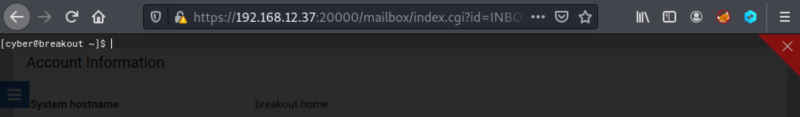
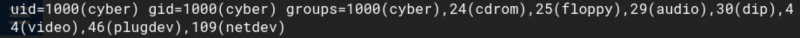

4.1 Spawn a reverse shell
1. On the webmin page you'll see at the bottom left and icon (Command shell). Click on it.

You got a “cyber” user's shell.
2. Let's see user's information.
[cyber@breakout ~
]
$id
Output:

Index